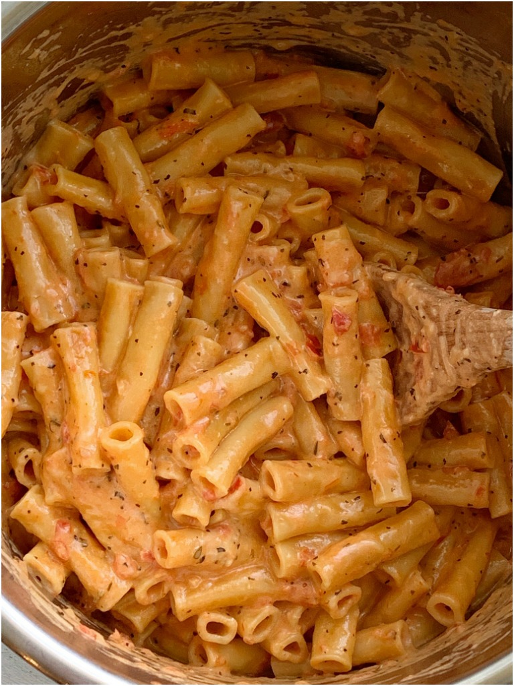

Instant Pot Ziti Pasta

I Hate Recipe Blogs
So, the project wants us to write a couple of paragraphs describing the recipe, followed by the unordered ingredient list and then an ordered steps list.
As someone who frequently tries to find new recipes online, I absolutely abhor blog style recipes. So, in lieu of typing a "couple of paragraphs"
about the recipe, I will instead force you to sit through (that's right - no "jump to recipe button!") a list of dad jokes!
- I'm afraid for the calendar. Its days are numbered.
- My wife said I should do lunges to stay in shape. That would be a big step forward.
- Why do fathers take an extra pair of socks when they go golfing? In case they get a hole in one!
- Singing in the shower is fun until you get soap in your mouth. Then it's a soap opera.
- What do a tick and the Eiffel Tower have in common? They're both Paris sites.
- What do you call a fish wearing a bowtie? Sofishticated.
- How do you follow Will Smith in the snow? You follow the fresh prints.
- If April showers bring May flowers, what do May flowers bring? Pilgrims.
- I thought the dryer was shrinking my clothes. Turns out it was the refrigerator all along.
- How does dry skin affect you at work? You don’t have any elbow grease to put into it.
- What do you call a factory that makes okay products? A satisfactory.
- Dear Math, grow up and solve your own problems.
- What did the janitor say when he jumped out of the closet? Supplies!
- Have you heard about the chocolate record player? It sounds pretty sweet.
- What did the ocean say to the beach? Nothing, it just waved.
- Why do seagulls fly over the ocean? Because if they flew over the bay, we'd call them bagels.
- I only know 25 letters of the alphabet. I don't know y.
- How does the moon cut his hair? Eclipse it.
- What did one wall say to the other? I'll meet you at the corner.
- What did the zero say to the eight? That belt looks good on you.
- A skeleton walks into a bar and says, 'Hey, bartender. I'll have one beer and a mop.'
- Where do fruits go on vacation? Pear-is!
- I asked my dog what's two minus two. He said nothing.
- What did Baby Corn say to Mama Corn? Where's Pop Corn?
- What's the best thing about Switzerland? I don't know, but the flag is a big plus.
- What does a sprinter eat before a race? Nothing, they fast!
- Where do you learn to make a banana split? Sundae school.
- What has more letters than the alphabet? The post office!
- Dad, did you get a haircut? No, I got them all cut!
- What do you call a poor Santa Claus? St. Nickel-less.
- I got carded at a liquor store, and my Blockbuster card accidentally fell out. The cashier said never mind.
- Where do boats go when they're sick? To the boat doc.
- I don't trust those trees. They seem kind of shady.
- My wife is really mad at the fact that I have no sense of direction. So I packed up my stuff and right!
- How do you get a squirrel to like you? Act like a nut.
- Why don't eggs tell jokes? They'd crack each other up.
- I don't trust stairs. They're always up to something.
- What do you call someone with no body and no nose? Nobody knows.
- Did you hear the rumor about butter? Well, I'm not going to spread it!
- Why couldn't the bicycle stand up by itself? It was two tired.
- What did one hat say to the other? Stay here! I'm going on ahead.
- Why did Billy get fired from the banana factory? He kept throwing away the bent ones.
The Actual Recipe
While the image above is not mine and was found through a google search (although it does look very close to what my dish looks like), this recipe is
100% my own and was created through trial and error. It is now a tried and true staple in my household!
Ingredients
- 4 links of Italian sausage, casing removed
- 2c chicken stock/broth
- 1c heavy cream
- 16oz (1 box) ziti/tube shaped pasta
- 1c marinara sauce
- 1c shredded parmesan cheese - if you use powdered shake cheese, I would use less than 1c!
- 1/2c shredded mozzarella cheese
Directions
- Using the saute function on your Instant Pot, brown the sausage, breaking it up with a wooden spoon.
- Once cooked through, add stock/broth, cream, and pasta to the Instant Pot.
- Put on lid and set to manual (high) for 6 minutes.
- When finished, let it naturally release for 6 minutes, then finish with quick release.
- Add in marinara sauce and stir to combine.
- Add in cheese and stir till melted through.
Recipe image taken from here
List of dad jokes taken from here